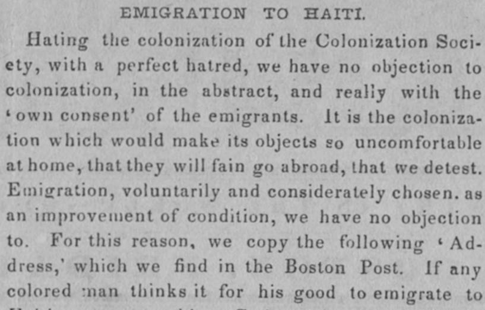
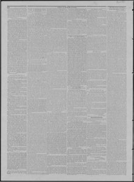

See the full pageVer la página completaHaling the colonization of the Colonization Soci ety, with a perfectRecibiendo la colonización de la Sociedad de Colonización, con un perfecto
The Liberator reprints an address to the colored people of the United States, dated Saint Domingo, July 10, 1847, from native Americans who had emigrated there in 1824, offering the emigration law passed by their House of Congress. The law invited strangers without distinction of color, paid passage at 14 dollars per head, and promised those coming as farmers fifty acres of land forever, farming implements and maintenance until they could support themselves, with exemption from military service for them and their offspring.The Liberator reproduce un llamamiento dirigido a la gente de color de los Estados Unidos, fechado en Santo Domingo el 10 de julio de 1847 y suscrito por estadounidenses de nacimiento que habían emigrado allí en 1824, que ofrecía la ley de emigración aprobada por su Cámara del Congreso. La ley invitaba a los extranjeros sin distinción de color, pagaba el pasaje a razón de 14 dólares por persona y prometía a quienes vinieran como agricultores cincuenta acres de tierra para siempre, aperos de labranza y manutención hasta que pudieran sostenerse, con exención del servicio militar para ellos y su descendencia.
FULL TEXT:TRADUCCIÓN:
EMIGRATION TO HAITI.EMIGRACIÓN A HAITÍ.
Hating the colonization of the Colonization Society, with a perfect hatred, we have no objection to colonization, in the abstract, and really with the 'own consent' of the emigrants. It is the colonization which would make its objects so uncomfortable at home, that they will fain go abroad, that we detest. Emigration, voluntarily and considerately chosen, as an improvement of condition, we have no objection to. For this reason, we copy the following 'Address,' which we find in the Boston Post. If any colored man thinks it for his good to emigrate toOdiando la colonización de la Sociedad de Colonización, con un odio perfecto, no tenemos objeción a la colonización, en abstracto, y realmente con el «propio consentimiento» de los emigrantes. Es la colonización que haría a sus objetos tan incómodos en casa, que de buena gana irán al extranjero, lo que detestamos. La emigración, voluntaria y consideradamente elegida, como una mejora de condición, no tenemos objeción a ella. Por esta razón, copiamos el siguiente «Discurso», que encontramos en el Boston Post. Si algún hombre de color piensa que es para su bien emigrar a
The Liberator. Boston, Mass., November 5, 1847.
See the original at the Library of CongressVer el original en la Biblioteca del Congreso
Edition: Edition 1Edición: edición 1
Page: 2Página: 2
Collection: Chronicling America, Library of CongressColección: Chronicling America, de la Biblioteca del Congreso
LCCN: sn84031524LCCN: sn84031524
Rights: public domain, according to the Library of CongressDerechos: dominio público, según la Biblioteca del Congreso